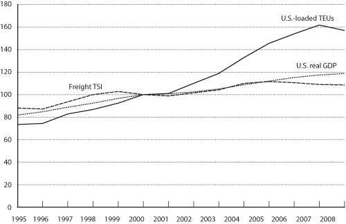

Excel | CSV | Table Version
(Index 2000 = 100)
NOTE: Real GDP growth is measured at seasonally adjusted annual rates based on chained 2000 dollars. TSI figures are annualized estimates based on the monthly published estimates.
SOURCE: U.S. Department of Transportation, Research and Innovative Technology Administration, Bureau of Transportation Statistics, based on data from U.S. Department of Commerce, Bureau of Economic Analysis, National Economic Accounts, National Incomes and Products Account, www.bea.gov/national/nipaweb/index.asp, as of March 14, 2009. TEU data based on data from U.S. Department of Transportation, Maritime Administration, which are drawn from The Journal of Commerce, Port Import Export Reporting Service (PIERS). Freight TSI data based on monthly freight TSI estimates from U.S. Department of Transportation, Research and Innovative Technology Administration, Bureau of Transportation Statistics, monthly TSI press releases at www.bts.gov.